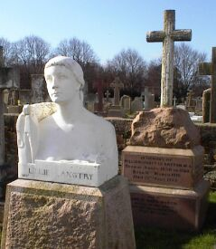
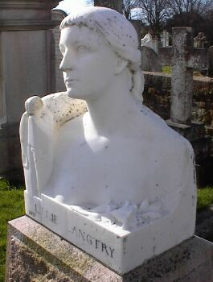

San Antonio, Texas,
Lé 15 dé févri,1969
U.S.A.
 Lé Texas est un êtat întérêssant. Dévant qué l'Alaska d'vînsse iun des chînquante Êtats d'L'Améthique du Nord y'a deux-s'trais ans, ch'tait l'Texas tch'était l'pus grand des Êtats-Unis. Dévant 1846, année dé s'n annexion par l'Améthique, lé Texas apparténait au Mexique, et des batâles assez acharnées entre les Mexitchains et l's Améthitchains d'la contrée 'taient l'ordre du jour jusqu'à 1836, quand les Mexitchains assiégîdrent l'Alamo - un bâtisse tch'était en êffet églyise et mission Catholique Romaine tch'avait 'té fondée en 1718 sus l'empliaichement tch'est actuellement la ville de San Antonio. Dans lus êfforts pour qué l'Texas gângnîsse sén îndépendance du Mexique, les soudards Améthitchains lus r'nardîdrent dans la mission, 150 dé ieux. Il' y fûdrent machacrés par les deux-s'trais mille soudards Mexitchains contre ieux auprès aver rêsisté l'siége pour douze jours. Les Mexitchains pèrdîdrent 1,800 soudards dans la batâle. Lé bâtisse dé l'Alamo a 'té restauré et présèrvé comme monûment historique, et est vîsité par eune foule dé touristes touos l's ans.
Y'a bein des choses întérêssantes entouor lé Texas, et d'vant aller pus liain i' n'faut pon oublyiyer la ville dé Langtry dans l'ouêst d'l'Êtat. Viyant qu'la fanmeuse Jèrriaise Lillie Langtry (née Le Breton) allit vîsiter chutte pétite ville-là dans san vivant, il est supposé par un tas d'gens qué ch'tait lyi tchi fut la cause qu'ou fut nommée d'même, mais i' pathaît qu'la vraie raison est qu'ou' fut nommée Langtry d'après l'înginnieux tchi seurvilyit la construction des rails du "train" tchi travèrse la contrée!
Mais qué ch'fûsse pour eune raison ou l'autre qu'ou' fut nommée d'même, la ville est r'nommée pour sa connexion auve Lady de Bathe viyant qué l'Juge Roy Bean, ouaithe tch'i' n'l'avait janmais veue, 'tait emmouothachi d'Lillie Langtry - sans doute par les portraits tch'il avait veu d'lyi.
Un drôle d'ouaîsé, chu Roy Bean-là. Pèrsonne né sait par tch'il autorité tch'i' s'était êtablyi comme juge, mais i' s'appelait "La louai ouêst dé La Pecos!" La Pecos est eune riviéthe tch'est par-là. Chose assez tchuthieuse pour un Jèrriais à comprendre, il 'tait juge absolu dans la contrée à l'ouêst dé la riviéthe, et quand i' condamnait un homme à mort il 'tait pendu sans aver l'drouait d'appel contre eune si tèrribl'ye condamnâtion!
 Lé Juge Bean avait eune pétite bijuque où'est tch'i' faisait valer un p'tit conmèrce dé vente au d'bit. Parmi l's annonces en d'ssus d'sa porte, y'en avait ieune tchi disait "The Jersey Lily". Quand i' fallait siégi comme juge, i' m'ttait eune tchaîse à côté d'un bathi touanné l'fond en haut tchi li faisait sèrvi d'tabl'ye, et il annonçait san jugement en donnant un coup d'maillot sus l'fond du bathi. I' s'adonnait qu'la grand' partie des causes tch'il avait à jugi 'tait l'vol dé j'vaux. Dans chu temps-là, lé j'va 'tait à bein près lé seul transport dé l'homme dans ches parages-là, et i' s'trouvait si êpithoté s'i' pèrdait san j'va - p't êt' des milles et des milles dé sa destinnâtion - qué l'vol d'un j'va 'tait considéthee crînminnel.
Un bouan jour, né v'la-t-i' pon un îndividu présenté d'vant l'Juge pour aver volé un j'va - et i' savait bein à tchi s'attendre, mais i' n'avait autcheune envie d'êt' pendu! Comme il 'tait d'la contrée, et savait qué l'juge 'tait emmouothachi d'Lillie Langtry, i' lî vînt eune idée dans la tête tch'il espéthait pouver p't êt' lî sauver la vie. I' dit au juge tch'il avait eune corle des j'veux à la belle et charmante "Jersey Lily" et tch'il 'tait prêt à lî faithe un présent d'la corle en êchange pour sa vie! Lé juge 'tait si content d'pouver mett' la main sus un mio des j'veux à la danme tchi lî pâssait si près du tchoeu tch'i' s'y accordit, et i' dêchèrgit l'atchûsé!
I' pathaît qu'la supposée corle dé j'veux 'tait en rêalité du crîn d'la coue d'un j'va tch'était d'la couleu des j'veux à Madanme Langtry, mais comme ch'est bein connu qu'l'amour est aveug'ye, lé juge né s'en appèrchut pon!
Ouaithe tch'i' y'a longtemps qué l'Juge Roy Bean n'est pus, sa r'nommée et s'n amour pour Lillie Langtry sont restés dans la mémouaithe des gens du Texas, et sa bijuque est acouo d'but à Langtry dans l'ouêst d'l'Êtat. Oulle est gardée en bouan ordre, et est un objet d'întéthêt pour les vîsiteurs et touristes tchi pâssent par-là, et l'annonce "The Jersey Lily" est acouo sus l'haut d'la porte. Ou' pouvez en vaie un portrait, bouannes gens, dans L'Musée d'La Société Jersiaise en ville. Ou' l'trouvethez pendu sus la muthâle dans l'coin tch'est rêsèrvé pour montrer l's êffets tch'apparténait à la fanmeuse et belle "Jersey Lily"!
Viyiz étout: